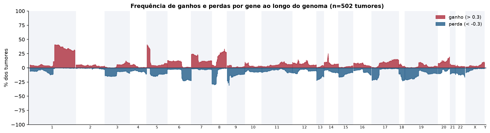
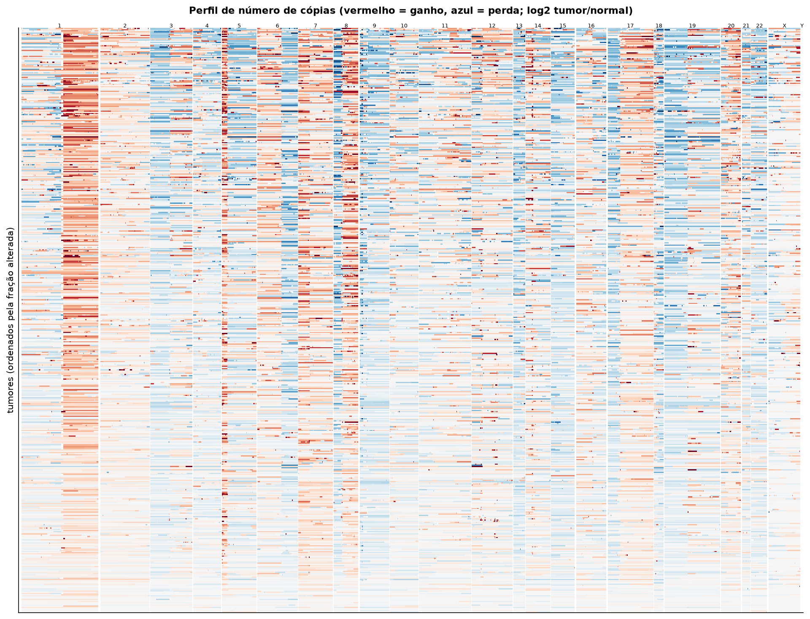
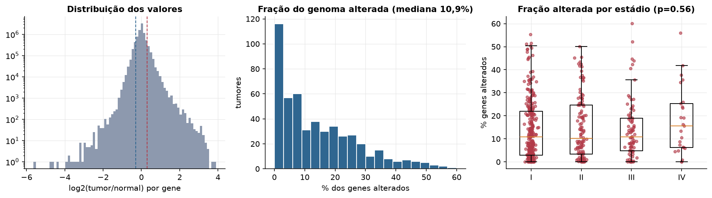
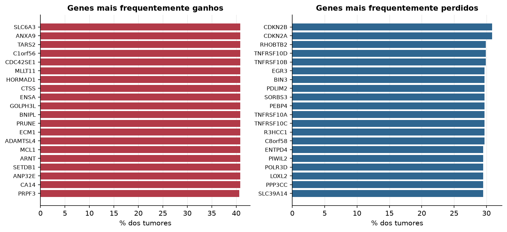

LUAD · Número de cópias (CNV)
Affymetrix SNP6, segmentos whitelisted do PanCanAtlas · gerado em 22/10/2026 01:05
502tumores
17.738genes
10,9%fração alterada mediana
125segmentos/tumor (mediana)
Fonte: SNP6 whitelisted (PanCanAtlas); nível de gene calculado dos segmentos (hg19)
O valor por gene é o do segmento que cobre o meio do gene (log2 tumor/normal, hg19). Sem correção de pureza e ploidia: tumores com pouca célula tumoral têm valores atenuados. Para chamadas discretas (−2 a 2), use o GISTIC2 do PanCanAtlas ou o ABSOLUTE.
Principais resultados
- Mediana de 10,9% dos genes com ganho ou perda por tumor (limiares log2 de 0.3 e -0.3).
- O cromossomo com mais ganhos em média é o 1 (17,2% dos tumores por gene) e o com mais perdas é o 13 (17,9%).
- Genes mais ganhos: SLC6A3 (41%), ANXA9 (41%), TARS2 (41%), C1orf56 (41%), CDC42SE1 (41%), MLLT11 (41%). Genes mais perdidos: CDKN2B (31%), CDKN2A (31%), RHOBTB2 (30%), TNFRSF10D (30%), TNFRSF10B (30%), EGR3 (30%).
- Fração alterada por estádio: Kruskal-Wallis p=0.56.
Paisagem ao longo do genoma


Carga de alterações

Genes recorrentes

Top 25 genes por frequência de ganho
| gene | chrom | % ganho | % perda | média log2 |
|---|---|---|---|---|
| SLC6A3 | 5 | 40.8 | 0.2 | 0.303 |
| ANXA9 | 1 | 40.8 | 0.2 | 0.276 |
| TARS2 | 1 | 40.8 | 0 | 0.277 |
| C1orf56 | 1 | 40.8 | 0 | 0.279 |
| CDC42SE1 | 1 | 40.8 | 0 | 0.278 |
| MLLT11 | 1 | 40.8 | 0 | 0.278 |
| HORMAD1 | 1 | 40.8 | 0 | 0.278 |
| CTSS | 1 | 40.8 | 0.2 | 0.277 |
| ENSA | 1 | 40.8 | 0 | 0.277 |
| GOLPH3L | 1 | 40.8 | 0 | 0.278 |
| BNIPL | 1 | 40.8 | 0.2 | 0.277 |
| PRUNE | 1 | 40.8 | 0.2 | 0.277 |
| ECM1 | 1 | 40.8 | 0 | 0.277 |
| ADAMTSL4 | 1 | 40.8 | 0 | 0.276 |
| MCL1 | 1 | 40.8 | 0 | 0.275 |
| ARNT | 1 | 40.8 | 0.2 | 0.279 |
| SETDB1 | 1 | 40.8 | 0.2 | 0.278 |
| ANP32E | 1 | 40.8 | 0 | 0.276 |
| CA14 | 1 | 40.8 | 0 | 0.276 |
| PRPF3 | 1 | 40.6 | 0 | 0.274 |
| PLEKHO1 | 1 | 40.6 | 0 | 0.275 |
| FAM63A | 1 | 40.6 | 0.2 | 0.276 |
| MRPS21 | 1 | 40.6 | 0 | 0.276 |
| APH1A | 1 | 40.6 | 0 | 0.276 |
| RPRD2 | 1 | 40.6 | 0 | 0.274 |
Top 25 genes por frequência de perda
| gene | chrom | % ganho | % perda | média log2 |
|---|---|---|---|---|
| CDKN2B | 9 | 3.6 | 30.9 | -0.286 |
| CDKN2A | 9 | 3.6 | 30.9 | -0.28 |
| RHOBTB2 | 8 | 2.6 | 29.9 | -0.178 |
| TNFRSF10D | 8 | 2.6 | 29.9 | -0.179 |
| TNFRSF10B | 8 | 2.6 | 29.9 | -0.178 |
| EGR3 | 8 | 2.6 | 29.7 | -0.178 |
| BIN3 | 8 | 2.6 | 29.7 | -0.178 |
| PDLIM2 | 8 | 2.6 | 29.7 | -0.178 |
| SORBS3 | 8 | 2.6 | 29.7 | -0.178 |
| PEBP4 | 8 | 2.6 | 29.7 | -0.178 |
| TNFRSF10A | 8 | 2.6 | 29.7 | -0.177 |
| TNFRSF10C | 8 | 2.6 | 29.7 | -0.178 |
| R3HCC1 | 8 | 2.8 | 29.7 | -0.178 |
| C8orf58 | 8 | 2.6 | 29.7 | -0.178 |
| ENTPD4 | 8 | 3 | 29.5 | -0.175 |
| PIWIL2 | 8 | 2.6 | 29.5 | -0.177 |
| POLR3D | 8 | 2.6 | 29.5 | -0.177 |
| LOXL2 | 8 | 2.8 | 29.5 | -0.175 |
| PPP3CC | 8 | 2.6 | 29.5 | -0.177 |
| SLC39A14 | 8 | 2.6 | 29.5 | -0.177 |
| CHMP7 | 8 | 2.8 | 29.5 | -0.175 |
| LGI3 | 8 | 2.8 | 29.3 | -0.175 |
| STC1 | 8 | 3.2 | 29.3 | -0.171 |
| SFTPC | 8 | 2.8 | 29.3 | -0.175 |
| PHYHIP | 8 | 2.6 | 29.3 | -0.176 |